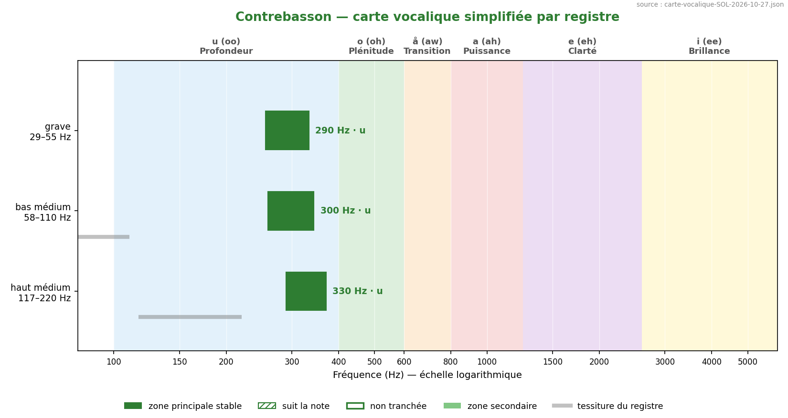
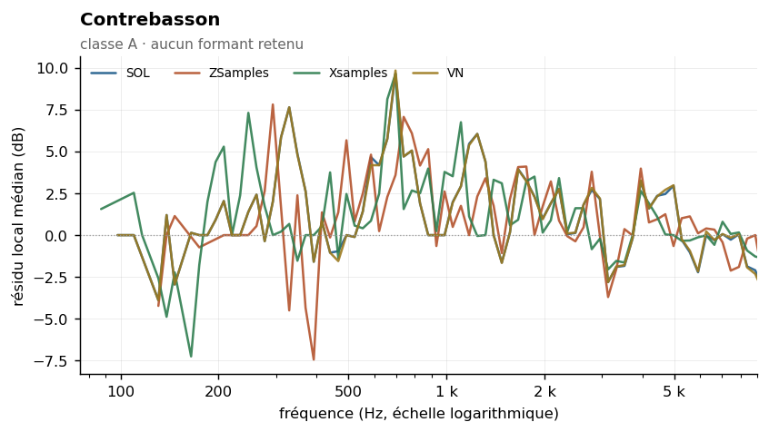
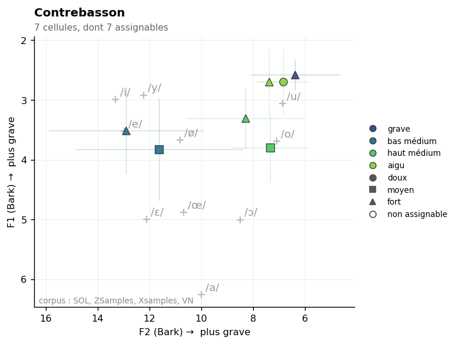

Contrabassoon
Sommaire › Les bois
| Classe | Provenance | Échantillons | Tessiture | Formants établis |
|---|---|---|---|---|
| A | VSL | 110 | A | 0 |



Statut des formants — révision du 26/10/2026
Confrontation des cinq corpus. Provenance de ce corpus : VSL / ConTimbre / perso (Yan_Adds).
Formant Statut 329 Hz indéterminé — le seul couple strict est SOL + VN, or les deux sont du VSL (voir _CORPUS-CROISES.md)698 Hz indéterminé — le seul couple strict est SOL + VN, or les deux sont du VSL (voir _CORPUS-CROISES.md)1174 Hz indéterminé — le seul couple strict est SOL + VN, or les deux sont du VSL (voir _CORPUS-CROISES.md)
etendue_residudans l'en-tête n'est pas une largeur de bande : c'est l'étendue du résidu de la méthode 8, souvent une butée de plage. Les largeurs mesurées sont dans_LARGEURS-DE-BANDE.md.
Observation du 26/10/2026, et elle est singulière.
Le contrebasson est l'instrument dont le ρ est le plus stable de tout le corpus après le tuba contrebasse : 0,42 dans SOL, 0,31 dans ZSamples, 0,43 dans Xsamples, 0,42 dans VN. Étendue de 0,12. Quatre corpus indépendants s'accordent pour en faire un instrument de classe A, à résonance fixe dominante.
Et pourtant aucune de ses trois valeurs ne se réplique : SOL donne 329 · 698 · 1 174 Hz, ZSamples 783 · 1 863, Xsamples 739 · 987 · 1 660. Seule la zone 698–739 Hz est commune à SOL et Xsamples, à un demi-ton, sans couple strict.
Son comportement réplique, ses fréquences non. L'accord parfait que VN semblait apporter — 329 · 698 · 1 174 Hz, identiques à SOL — était un doublon VSL : mêmes fichiers, corrélation 1,00000. Voir
_CORPUS-CROISES.md.
Deux lectures possibles, et nous ne pouvons pas trancher : ou bien ces instruments ont réellement des résonances fortes mais situées différemment d'un exemplaire à l'autre — ce qui serait cohérent avec la variabilité des perces de contrebasson — ou bien la méthode trouve des pics stables mais mal localisés sur un spectre à 90 harmoniques.
Un corpus ni VSL ni ZSamples trancherait. C'est, avec le tuba contrebasse, la demande la plus utile si un enregistrement se présente.
Méthode 8 — trois formants retenus. Le cas le plus favorable de tout le corpus. Voir
00-METHODE.md.
Le contrebasson est l'instrument idéal pour l'enveloppe composite, et pour une raison arithmétique simple : avec un f0 de 29 à 233 Hz, chaque note offre 90 harmoniques dans la plage analysée — le plafond de la mesure, atteint pour la médiane comme pour le maximum, avec un minimum de 47. La réponse du tuyau est donc échantillonnée de façon dense et continue par chaque note individuelle, et l'agrégation des 110 notes la confirme.
C'est aussi le seul instrument du corpus dont toute la tessiture tombe sous la limite de validité du lissage Orchidea (276 Hz) — à l'exact opposé du piccolo. Les anciennes mesures le concernant étaient donc, en principe, les moins mauvaises du corpus.
Réserve à signaler : la base ne contient aucun échantillon ordinario. L'analyse porte
sur la technique non-vibrato, seule disponible. Cela n'invalide pas la mesure formantique,
le vibrato n'affectant pas les résonances de corps, mais il faut le mentionner.
| Zone | Résidu | Largeur −3 dB | Notes distinctes | Verdict |
|---|---|---|---|---|
| 329 Hz | +4,6 dB | 277–370 Hz | 8 | retenu |
| 698 Hz | +5,9 dB | 587–783 Hz | 22 | retenu |
| 1 174 Hz | +4,2 dB | 1 046–1 479 Hz | 30 | retenu |
| Zone | k = 2–3 | k = 4–7 | k = 8–15 | k ≥ 16 | Robustesse |
|---|---|---|---|---|---|
| 329 Hz | +2,9 | +5,4 | +7,3 | — | oui |
| 698 Hz | — | +12,9 | +10,0 | +8,2 | oui |
| 1 174 Hz | — | +6,6 | +5,1 | +4,5 | oui |
| 4 432 Hz | — | — | — | +2,0 | non |
Le formant à 698 Hz est le plus robuste de tout le corpus des bois : résidu supérieur à +8 dB sur trois groupes de rang consécutifs, atteignant +12,9 dB aux rangs 4–7, avec une bande à −3 dB étroite (587–783 Hz, soit un peu plus de 4 demi-tons). C'est le cas d'école d'une résonance fixe bien définie.
Le rejet de 4 432 Hz est net : un seul groupe de rang alimenté, et par les harmoniques très élevés uniquement.
| Descripteur | Valeur | Lecture |
|---|---|---|
| Pente spectrale médiane | −14,0 dB/octave (σ 2,2) | régulière |
| Harmoniques par note | 90 [47–90] | plafond de mesure — cas optimal |
| Balance impair − pair | −1,8 dB | tuyau conique, équilibre proche |
| Enveloppe vraie (méthode 6) | 301 Hz, σ 101 | ordres adaptatifs de 66 à 529 |
| Source | Valeur annoncée | Notre mesure | Accord |
|---|---|---|---|
| Yan_Adds (ancien) | F1 = 226 ± 98 Hz, /u/ | 329 Hz | proche, mais rapport F1/tessiture = 2,59 |
| Ancien Fp | 1 279 Hz | 1 174 Hz | convergent |
| Backus, Giesler, Meyer | aucune donnée | — | instrument non étudié |
Deux remarques.
L'ancien F1 de 226 Hz présentait un rapport de 2,59 à la médiane de tessiture, le plus élevé du corpus : c'était donc bien le signe d'une résonance réelle et non d'un effet de hauteur. Il était simplement un peu bas, et la mesure actuelle le place à 329 Hz.
L'ancienne étude annonçait un « unisson formantique parfait Δ = 0 Hz » entre contrebasson, tuba basse et tuba contrebasse, tous à 226 Hz. Les trois valeurs tombaient dans le même bin de FFT (bin 21). Avec le contrebasson maintenant mesuré à 329 Hz, cette coïncidence est à reprendre — il faudra mesurer les deux tubas par la même méthode avant de conclure.
Non défini dans Data/registres.md. À établir.
17 paires calculées. Fusion moyenne : 17 %. Voir ../_MELANGES.md.
| Couleur nouvelle avec | Se fond avec | ||
|---|---|---|---|
| Trompette en Ut | 64 % | Cor en Fa | 71 % |
| Violon | 33 % | Tuba contrebasse | 70 % |
| Cor anglais | 33 % | Alto | 48 % |
À compléter. Éléments acquis :
Aucun à ce stade. Figures prévues dans ../Versions-html-and-docx/media/ :
| Fichier prévu | Contenu |
|---|---|
contrebasson_composite.png |
enveloppe composite — le cas le plus net, bonne figure pédagogique d'introduction |
contrebasson_rangs.png |
résidu par groupe de rang pour les trois formants |
bassons_communs.png |
superposition basson / contrebasson montrant la zone commune 1 108–1 174 Hz |
La première figure est la meilleure candidate pour illustrer la méthode dans un cours : avec 90 harmoniques par note et trois formants nets, c'est le cas où la méthode se voit le mieux.